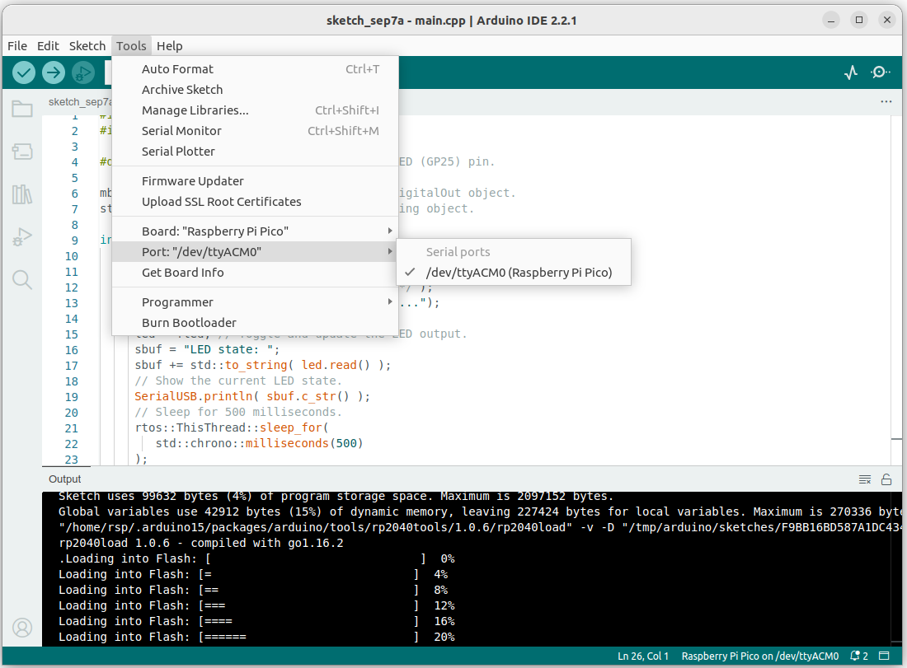

แนวทางการเรียนรู้ ARM Mbed OS โดยใช้บอร์ด Raspberry Pi Pico#
บทความนี้นำเสนอแนวทางการเรียนรู้ Arm Mbed OS 6.x โดยใช้บอร์ด Raspberry Pi Pico (RP2040) และการจำลองการทำงานเสมือนจริงด้วย Wokwi Online Simulator
Keywords: Arm Mbed OS, RTOS, Raspberry Pico, RP2040, Arduino, Wokwi Simulator
▷ Arm Mbed OS#
บริษัท Arm Ltd. ได้พัฒนา Arm Mbed OS ซึ่งเป็นระบบปฏิบัติการเวลาจริง (Real-Time OS: RTOS) และเป็นซอฟต์แวร์ประเภทโอเพนซอร์ส เริ่มต้นตั้งแต่ประมาณปีค.ศ. 2009 และต่อเนื่องมาจนถึงปัจจุบัน แบ่งเป็นเวอร์ชันหลักคือ Mbed 2, Mbed 5 และ Mbed 6
ในอดีตผู้ใช้สามารถทดลองเขียนโค้ดผ่านเว็บเบราว์เซอร์ได้ โดยใช้ Mbed Online Compiler แต่ปัจจุบันยกเลิกการบริการไปแล้ว และแต่ก็มีซอฟต์แวร์รุ่นใหม่คือ Keil Studio Cloud มาแทนที่
Mbed OS 6.x รองรับบอร์ดไมโครคอนโทรลเลอร์ (MCU Boards) หลายรุ่น และจากหลายบริษัทผู้ผลิตชิป ยกตัวอย่างที่สำคัญ เช่น STM และ NXP หรือดูรายการบอร์ดเพิ่มเติมได้จาก https://www.keil.arm.com/boards/
ในอดีต Jan Jongboom ในช่วงเวลาที่เขายังทำงานให้กับบริษัท Arm Ltd. ได้พัฒนาและเปิดให้ลองใช้งาน
Mbed 5 Simulator (Experimental)
และเปิดเผยซอร์สโค้ด github:mbed-simulator
ทำให้ผู้ใช้สามารถทดลองรันโค้ดที่เขียนด้วย C/C++ และ Mbed 5 API
และใช้เป็นเครื่องมือสำหรับการเรียนรู้ Mbed OS API ในเบื้องต้น แต่ในปัจจุบันไม่มีการพัฒนาต่อและได้ยกเลิกการให้บริการไปแล้ว
⟶ แนะนำให้อ่านบทความที่เกี่ยวข้อง: "ARM Mbed OS"
▷ ความสัมพันธ์ระหว่าง Arduino และ Arm Mbed OS#
ในช่วงหลายปีที่ผ่านมา บริษัท Arduino ได้พัฒนาบอร์ดไมโครคอนโทรลเลอร์ ออกมาสู่ตลาด ยกตัวอย่างเช่น
- Arduino Opta Series
- Portenta H7 / H7 Lite
- Arduino Edge Control
- Arduino Nicla / Nicla Vision
- Arduino GIGA R1 WiFi
- Arduino Nano 33 BLE / BLE Sense
- Arduino Nano 2040 Connect
และได้พัฒนาซอฟต์แวร์ Arduino Core for Mbed OS มารองรับการเขียนโปรแกรม Arduino Sketch สำหรับบอร์ดไมโครคอนโทรลเลอร์เหล่านี้ โดยเลือกใช้ Arm Mbed OS เป็นพื้นฐานในการทำงาน และตั้งแต่ประมาณเดือนเมษายน ค.ศ. 2021 เป็นต้นมา ก็สามารถนำมาใช้ได้กับบอร์ด Arduino Nano 2040 Connect รวมถึงบอร์ด Raspberry Pico / Pico-W และบอร์ดอื่น ๆ ที่ใช้ชิป RP2040
RP2040 เป็นชิปประเภท SoC ที่มีซีพียูตามสถาปัตยกรรมตระกูล Arm Cortex-M (Dual-Core 32-bit Arm Cortex-M0+) บริษัท Raspberry Pi Trading ได้ออกแบบและพัฒนาชิป MCU เป็นรุ่นแรกของบริษัท และมีการสร้างบอร์ด Raspberry Pico เป็นบอร์ดไมโครคอนโทรลเลอร์รุ่นแรกที่ใช้ชิปดังกล่าว (เปิดตัวในเดือนมกราคม ค.ศ. 2021)
Arduino Nano 2040 Connect และ Raspberry Pico-W รองรับการสื่อสารไร้สายด้วย WiFi / BLE แต่ก็มีความแตกต่างในการใช้งานและการเขียนโค้ด
- บอร์ด Arduino Nano 2040 Connect มีชิป RP2040
เป็นตัวประมวลผลหลัก และใช้โมดูล U-blox Nina W102 สำหรับการสื่อสารไร้สาย และใช้ไลบรารีชื่อ
NinaWiFi.hสำหรับการเขียนโค้ด - บอร์ด Raspberry Pico-W มีชิป RP2040
เป็นตัวประมวลผลหลัก แต่ใช้โมดูลที่มีชิป Infineon CYW43439 สำหรับการสื่อสารไร้สาย
และใช้ไลบรารีชื่อ
WiFi.hสำหรับการเขียนโค้ด (Arduino WiFi for Pico-W) - เมื่อเปรียบเทียบราคา บอร์ด Raspberry Pico-W มีราคาถูกกว่า Arduino Nano 2040 Connect
ดังนั้นจึงอาจกล่าวได้ว่า Arm Mbed OS เป็นองค์ประกอบเชิงซอฟต์แวร์และมีความสำคัญในระบบนิเวศของ Arduino (Arduino Ecosystem) ในยุคปัจจุบันและอนาคต
▷ ตัวเลือกสำหรับการเรียนรู้ Arm Mbed OS#
คำถาม: ถ้าหากสนใจจะเรียนรู้และใช้งาน Arm Mbed OS ในมุมมองของนักพัฒนาซอฟต์แวร์ เช่น การใช้คำสั่งต่าง ๆ ของ Mbed OS API ควรจะเลือกใช้ชิปหรือบอร์ดไมโครคอนโทรลเลอร์ใดได้บ้าง และมีซอฟต์แวร์สำหรับการจำลองการทำงานเสมือนจริงหรือไม่ ?
โดยปรกติแล้ว บอร์ด STM32 Nucleo ซึ่งมีหลายรุ่นให้เลือกใช้งาน สามารถนำมาใช้งานร่วมกับ Arm Mbed OS 6 ได้เป็นอย่างดี แต่อีกตัวเลือกหนึ่งที่น่าสนใจคือ การใช้บอร์ดไมโครคอนโทรลเลอร์ RP2040 เช่น Raspberry Pi Pico (หรือบอร์ดไมโครคอนโทรลเลอร์อื่นที่ใช้ชิปตัวนี้เหมือนกัน)
- บอร์ด Raspberry Pi Pico มีราคาไม่แพง และมีบอร์ด MCU ที่ใช้ชิป RP2040 แทนที่ได้
- รองรับการเขียนโปรแกรมด้วย Arduino IDE และ VS Code IDE + PlatformIO Extension
- สามารถเขียนโค้ดและจำลองการทำงานเสมือนจริงได้โดยใช้ Wokwi Simulator
- ตัวเลือกสำหรับภาษาคอมพิวเตอร์สำหรับการเขียนโค้ด C/C++
- การใช้ภาษา Python สำหรับไมโครคอนโทรลเลอร์
ดังนั้น ถ้าจะใช้บอร์ด Raspberry Pi Pico ร่วมกับ Arduino Core for Mbed OS ก็สามารถนำมาใช้ในการเรียนรู้หลักการทำงานและการเขียนโค้ดโดยใช้ Arm Mbed OS API ได้
▷ Wokwi Simulator - Arduino RP2040#
ถัดไปเป็นการนำเสนอตัวอย่างการเขียนโค้ดและจำลองการทำงานของโปรแกรม โดยใช้ Wokwi Online Simulator สำหรับบอร์ด Raspberry Pi Pico
ให้เปิดเบราว์เซอร์ไปที่เว็บไซต์ต่อไปนี้ เพื่อสร้างโปรเจกต์ใหม่ โดยเลือกใช้บอร์ด Pico: https://wokwi.com/projects/new/pi-pico
คำแนะนำ: ให้เริ่มต้นด้วยขั้นตอน Sign-In ในเว็บไซต์ของ Wokwi เพื่อให้มีบัญชีผู้ใช้ก่อน จากนั้นจึงสามารถสร้างโปรเจกต์และใช้งานได้ฟรี และเก็บบันทึกไฟล์โปรเจกต์ต่าง ๆ ไว้ใน Wokwi Cloud ได้ (แชร์ต่อสาธารณะ)
เมื่อสร้างโปรเจกต์ใหม่แล้ว จะมีไฟล์ในโปรเจกต์ เช่น
sketch.inoเป็นไฟล์โค้ด (ตัวอย่าง) สำหรับ Arduino Sketch ผู้ใช้สามารถเปลี่ยนชื่อใหม่ได้diagram.jsonเป็นไฟล์ประเภท JSON ที่ใช้สำหรับการวาดผังวงจรที่อยู่ทางขวามือ และจำลองการทำงานของโปรแกรมโดยใช้ฮาร์ดแวร์เสมือนจริง- Library Manager จะใช้สำหรับการเพิ่มรายการ Arduino Labraries ที่ต้องการใช้งานในแต่ละโปรเจกต์
รูป: การสร้างโปรเจกต์ใหม่ โดยใช้บอร์ด Raspberry Pi Pico
ทดลองโค้ด Arduino Sketch ตามตัวอย่างต่อไปนี้ แล้วลองรันโค้ด โดยใช้ Simulator (กดปุ่มสีเขียวเพื่อเริ่มต้นการจำลองการทำงาน) เมื่อโปรแกรมทำงาน จะสังเกตเห็น LED (สีเขียว) ที่อยู่บนบอร์ด Pico และต่อกับขา GP25 กระพริบด้วยอัตราคงที่ และมีการส่งข้อความเอาต์พุตออกมา
void setup() {
Serial1.begin(115200);
Serial1.println("Hello, Raspberry Pi Pico!");
}
void loop() {
// Use a static local variable to keep the LED state.
static int state = 0;
// Toggle and update the LED output.
digitalWrite( LED_BUILTIN, state ^= 1 );
// Show the current LED state by sending a message to Serial1.
Serial1.print( "LED state: " );
Serial1.print( state ? "ON" : "OFF" );
Serial1.println();
delay(500); // Wait for 500 msec.
}
เมื่อโค้ดทำงาน จะมีข้อความเอาต์พุตมาปรากฎในส่วนที่รับข้อความจากบอร์ด Pico ทางพอร์ตอนุกรม Serial
ถ้าหากคลิกดูไฟล์ diagram.json จะเห็นว่า มีการเลือกใช้ขา
GP0 / RX และ GP1 / TX ของวงจร UART ในชิป RP2040
สำหรับการรับส่งข้อมูลกับ Serial Monitor
(ในโค้ดตัวอย่าง แสดงให้เห็นว่า มีการใช้ Serial หมายเลข 1
(หรือ Serial1) สำหรับการเขียนโค้ดด้วย Arduino Sketch
เพื่อการส่งข้อความเอาต์พุต)
รูป: ตัวอย่างไฟล์ diagram.json
รูป: ตัวอย่างการจำลองการทำงานของโปรแกรม และรับข้อความเอาต์พุตผ่านทาง Serial1
หากนำโค้ดนี้ไปทดลองกับบอร์ด Pico โดยใช้ฮาร์ดแวร์จริง และต้องการส่งข้อความเอาต์พุต ไปยังคอมพิวเตอร์ของผู้ใช้ จะต้องมีอุปกรณ์เสริมมาต่อเพิ่ม ซึ่งก็คือ โมดูล USB-to-Serial (3.3V I/O Interfacing) โดยนำมาต่อที่ขาสัญญาณ Rx และ Tx ของบอร์ด Pico จึงจะรับส่งข้อมูลได้
แต่ถ้าต้องการเปลี่ยนมาใช้พอร์ต USB ของ RP2040
ในโหมด USB CDC (USB-to-Serial) เพื่อความสะดวกในการใช้งาน
ก็จะต้องแทนที่การใช้ Serial1 ด้วย SerialUSB (หรือจะใช้
Serial ก็ได้ ซึ่งให้ผลเหมือนกัน) ก็มีตัวอย่างการเขียนโค้ดดังนี้
และจะต้องมีการแก้ไขไฟล์ diagram.json ใหม่ให้ถูกต้องด้วย
รูป: ตัวอย่างโค้ดที่เปลี่ยนมาใช้ SerialUSB(ไม่ได้ใช้ Serial1)
และสามารถส่งข้อความเอาต์พุตออกมาได้เช่นกัน
รูป: การแก้ไขไฟล์ diagram.json เพื่อเปลี่ยนมาใช้ SerialUSB
เพื่อการส่งข้อความเอาต์พุต
▷ Wokwi Simulator - Arduino Mbed RP2040#
ถัดไปเป็นการนำเสนอตัวอย่างการเขียนโค้ด C/C++ โดยเปลี่ยนจากการใช้คำสั่งของ Arduino API มาใช้ Mbed OS API และจำลองการทำงานของโปรแกรมโดยใช้ Wokwi Online Simulator สำหรับบอร์ด Raspberry Pi Pico
ขั้นตอนแรกให้ลบโค้ดในไฟล์ Arduino Sketch (.ino) ออกทั้งหมด ให้เหลือเป็นไฟล์ว่างเปล่า
ถัดไปขั้นตอนที่สอง ให้สร้างไฟล์ใหม่ และเพิ่มไว้ในโปรเจกต์ ตั้งชื่อไฟล์ใหม่เป็น main.cpp
แล้วลองใช้โค้ดตามตัวอย่างต่อไปนี้
#include "mbed.h"
#include "USB/PluggableUSBSerial.h" // Arduino USB-to-Serial
#define LED_PIN (p25) // Use the on-board LED (GP25) pin.
mbed::DigitalOut led( LED_PIN ); // Use a DigitalOut object.
std::string sbuf; // Use a standard C++ string object.
int main() {
// Intialize the Arduino USB-to-Serial.
PluggableUSBD().begin();
rtos::ThisThread::sleep_for( 100 /*ticks*/ );
SerialUSB.println("Mbed OS - RP2040 Demo...");
while(1) {
led = !led; // Toggle and update the LED output.
sbuf = "LED state: ";
sbuf += std::to_string( led.read() );
// Show the current LED state.
SerialUSB.println( sbuf.c_str() );
// Sleep for 500 milliseconds.
rtos::ThisThread::sleep_for(
std::chrono::milliseconds(500)
);
}
}
จากโค้ดตัวอย่างจะเห็นได้ว่า ไม่มีการสร้างฟังก์ชัน void setup() {...}
และ void loop() {...} ในไฟล์ Arduino Sketch แล้ว
แต่เป็นการสร้างฟังก์ชัน int main() {...} ในไฟล์ main.cpp
เหมือนกับซอร์สโค้ดสำหรับโปรแกรมภาษา C/C++ โดยทั่วไป
- คำสั่งของ Arduino เช่น
delay(...)เพื่อการหน่วงเวลา จะถูกแทนที่ด้วยrtos::ThisThread::sleep_for(...)เป็นต้น - มีการใช้คลาส
std::stringและเมธอดที่เกี่ยวข้อง ซึ่งเป็นส่วนหนึ่งของ Standard C++ String Library สำหรับการสร้างข้อความ - มีการใช้คำสั่ง
std::chrono::milliseconds(...)ซึ่งเป็นส่วนหนึ่งของ Standard C++ Chrono Library และใช้สำหรับการกำหนดระยะเวลา (Time Duration) - มีการใช้คลาส
mbed::DigitalOutของ Mbed Drivers เพื่อนำมาใช้กับขา GPIO ที่เป็นเอาต์พุต-ดิจิทัล - มีการทำคำสั่ง
PluggableUSBD().begin()และการใช้SerialUSBจากไฟล์PluggableUSB.hเป็นคำสั่งของ Arduino ไม่ใช่การเรียกใช้คำสั่งของ Mbed Drivers API แต่จะต้องใช้SerialUSBในลักษณะนี้ หากจะนำโค้ดตัวอย่างไปใช้กับ Arduino IDE และทดลองกับอุปกรณ์บอร์ทดลองจริง จึงจะรับข้อความเอาต์พุตได้ใน Serial Monitor ของโปรแกรม Arduino IDE - แต่ถ้าไม่ใช้
SerialUSBก็มีคลาสUSBSerialของ Mbed OS API ให้ใช้งานได้เช่นกัน
รูป: การจำลองการทำงานของโค้ดตัวอย่างที่ใช้คำสั่งของ Mbed OS API
ตัวอย่างถัดไปเป็นการสาธิตการใช้คลาส USBSerial
ของ Mbed Drivers API
และ การใช้คลาส Thread
เพื่อสร้าง Mbed OS Thread มาทำหน้าที่สลับสถานะลอจิกที่ขา GP25 และทำให้ LED กระพริบได้ด้วยอัตราคงที่
#include "mbed.h"
#include "rtos.h"
#include "USBSerial.h"
#define LED_PIN (p25) // Use on-board LED (GP25 pin).
// Note: This code doesn't work with Arduino Serial Monitor.
// You can use other programs such as Putty or TeraTerm to
// receive the messages from the serial port.
// Use Mbed Drivers such as USBSerial and DigitalOut objects.
USBSerial usbSerial(false); // Use USB in non-blocking mode.
mbed::DigitalOut led( LED_PIN ); // Use the onboard LED pin.
std::string sbuf; // Use a standard c++ string object.
rtos::Thread ledBlinkthread(osPriorityNormal); // Create an Mbed thread.
void ledBlink( void *arg ) {
auto sleep_ms = std::chrono::milliseconds( (uint32_t)arg );
while(1) {
led = !led; // Toggle and update the LED output.
sbuf = "LED state: ";
sbuf += std::to_string( led.read() );
// Send a string to the USB serial.
usbSerial.printf( "%s\r\n", sbuf.c_str() );
rtos::ThisThread::sleep_for( sleep_ms );
}
}
int main() {
usbSerial.init();
usbSerial.connect();
while ( !usbSerial.connected() ) {
// Blink the LED while waiting for USB connection.
led = !led; // Fast-toggle the onboard LED.
rtos::ThisThread::sleep_for( 100 /*ticks*/ );
}
// Show Mbed OS Version
usbSerial.printf( "Mbed OS - RP2040 Demo..\r\n" );
usbSerial.printf( "Mbed OS v%d.%d.%d\r\n",
MBED_MAJOR_VERSION, MBED_MINOR_VERSION, MBED_PATCH_VERSION );
// Show the esystem clock speed in MHz.
usbSerial.printf( "CPU Clock: %lu MHz\r\n",
SystemCoreClock/1000000UL );
// Start the LED-Blink thread
ledBlinkthread.start( mbed::callback(ledBlink, (void *)500) );
while(1) {
osDelay(osWaitForever); // wait forever
}
}
รูป: การจำลองการทำงานของโค้ดตัวอย่างที่มีการใช้ USBSerial และ Thread
ของ Mbed OS API
อีกตัวอย่างหนึ่งเป็นการสาธิตการใช้คลาสของ Mbed Drivers API ได้แก่
AnalogInเพื่ออ่านค่าจากแอนะล็อก-อินพุต (เลือกใช้ขา GP26 ของบอร์ด Pico)PwmOutเพื่อสร้างสัญญาณ PWM (Pulse Width Modulation) และใช้เป็นสัญญาณเอาต์พุตควบคุมความสว่างของ LED (เลือกใช้ขา GP13 ของบอร์ด Pico)
และจำลองการทำงานด้วย Wokwi Simulator มีการใช้โมดูลตัวต้านทานปรับค่าได้แบบเสมือนจริง สร้างสัญญาณแอนะล็อก และใช้วงจร LED สำหรับการปรับความสว่าง
#include "mbed.h"
#include "USB/PluggableUSBSerial.h"
#define ADC_VREF (3300ul)
#define LED_PIN (p13)
#define ADC_PIN (p26)
mbed::AnalogIn ain(ADC_PIN);
mbed::PwmOut led_pwm(LED_PIN);
std::string sbuf; // Use a standard C++ string object.
int main() {
// Intialize the Arduino USB-to-Serial.
PluggableUSBD().begin();
rtos::ThisThread::sleep_for( 100 /*ticks*/ );
SerialUSB.println("Mbed OS - RP2040 Demo...");
// Set PWM period to 1024 usec
led_pwm.period_us( 1024 );
// Set the PWM pulse width to 0.
led_pwm.pulsewidth_us( 0 );
while(1) {
// Read the analog input as (unsigned) 16-bit value.
uint32_t value = ain.read_u16();
// Convert the analog value to millivolts.
uint32_t mV = ADC_VREF*value/65535;
// Update the PWM pulse width.
led_pwm.pulsewidth_us( value/64 );
sbuf = "{ADC(mV):";
sbuf += std::to_string( mV );
sbuf += "}";
// Show the current LED state.
SerialUSB.println( sbuf.c_str() );
// Sleep for 500 milliseconds.
rtos::ThisThread::sleep_for(
std::chrono::milliseconds(200)
);
}
}
หลักการทำงานของโค้ดตัวอย่างมีดังนี้ ถ้าหมุนปรับค่าความต้านทานของ Potentiometer จะทำให้แรงดันไฟฟ้าเปลี่ยนแปลง (อยู่ในช่วง 0V ถึง 3.3V) และเมื่อใช้เป็นสัญญาณอินพุต-แอนะล็อกของวงจร ก็จะมีการอ่านค่าแอนะล็อก และนำไปใช้กำหนดค่า Duty Cycle ของสัญญาณ PWM ที่มีความกว้างของคาบเท่ากับ 1024 usec การปรับเพิ่มหรือลดค่า Duty Cycle จะทำให้ LED มีการเปลี่ยนแปลงระดับของความสว่าง
รูป: ผังวงจรเสมือนจริงเพื่อนำไปต่อวงจรทดลอง
รูป: การจำลองการทำงานแบบเสมือนจริงด้วย WokWi Simulator
รูป: การแสดงรูปกราฟสัญญาณจากข้อมูลเอาต์พุต ซึ่งเป็นค่าแรงดันไฟฟ้าที่อ่านได้จากขาอินพุต-แอนะล็อก
File: diagram.json
{
"version": 1,
"author": "Anonymous maker",
"editor": "wokwi",
"parts": [
{ "type": "wokwi-pi-pico", "id": "pico",
"top": 0, "left": 0, "attrs": {} },
{ "type": "wokwi-potentiometer", "id": "pot1",
"top": -16, "left": 102, "attrs": {} },
{
"type": "wokwi-led",
"id": "led1",
"top": 60,
"left": -50,
"attrs": { "color": "red" }
},
{
"type": "wokwi-resistor",
"id": "r1",
"top": 120,
"left": -64,
"rotate": 90,
"attrs": { "value": "470" }
}
],
"connections": [
[ "pico:3V3", "pot1:VCC", "red", [ "h28", "v32", "h40" ] ],
[ "pot1:GND", "pico:GND.8", "black", [ "v40", "h-40", "v0" ] ],
[ "pico:GP26", "pot1:SIG", "green", [ "h0" ] ],
[ "pico:GP13", "led1:A", "green", [ "h0" ] ],
[ "led1:C", "r1:1", "green", [ "v0" ] ],
[ "r1:2", "pico:GND.4", "black", [ "h4", "v24" ] ]
],
"dependencies": {}
}
▷ การทดลองใช้บอร์ดไมโครคอนโทรลเลอร์ RP2040#
ถัดไปเป็นการสาธิตการใช้งาน Arduino IDE v2.x (ใช้ระบบปฏิบัติการ Ubuntu 22.04 LTS) เพื่อทดลองโค้ดตัวอย่างและอัปโหลดโปรแกรมไปยังบอร์ด Raspberry Pi Pico
ขั้นตอนการดำเนินการ
- ติดตั้ง Arduino Mbed OS RP2040 สำหรับ Board Managers
- สร้างโปรเจกต์ Arduino Sketch ใหม่
- ลบโค้ดทั้งหมดในไฟล์ Arduino Sketch (.ino)
- สร้างและเพิ่มไฟล์ใหม่
main.cppและเขียนโค้ดตัวอย่าง (โค้ดตัวอย่างนี้ใช้คำสั่งSerialUSBของ Arduino API) - คอมไพล์โค้ด และอัปโหลดไปยังบอร์ด Pico แต่จะต้องทำให้ชิป RP2040 อยู่ในโหมด USB Bootloader
รูป: การติดตั้ง Arduino Mbed OS RP2040 สำหรับ Board Managers
รูป: การเขียนโค้ดในไฟล์ main.cpp ของโปรเจกต์
รูป: การอัปโหลดไฟล์เฟิร์มแวร์ไปยังบอร์ด Pico

รูป: การเลือกพอร์ต Serial เพื่อรับข้อความเอาต์พุตจากบอร์ด Pico
การอัปโหลดไฟล์เฟิร์มแวร์ด้วย Arduino IDE ไปยังบอร์ด Pico จะต้องมีการทำให้ชิปอยู่ในโหมด USB Bootloader โดยการทำให้ขาอินพุต RUN (ขารีเซต) เป็น Low และกดปุ่ม BOOT บนบอร์ด แต่เนื่องจากขา RUN ของบอร์ด Pico ไม่มีปุ่มกดรีเซต จึงแนะนำให้ต่อวงจรปุ่มกดเพิ่มบนเบรดบอร์ด เพื่อความสะดวก
รูป: ตัวอย่างบอร์ด RP2040 (เช่น บอร์ด YD-RP2040 ของ VCC-GND Studio) ที่มีปุ่มกดสำหรับการรีเซต
รูป: Pico Pinout
รูป: YD-RP2040 Pinout
▷ กล่าวสรุป#
บทความนี้ได้นำเสนอแนวทางการเรียนรู้การเขียนโค้ดด้วย Arm Mbed OS โดยใช้ภาษา C/C++ และใช้ซอฟต์แวร์ Arduino IDE v2.x ในการเขียนโค้ด และเลือกใช้บอร์ด Raspberry Pi Pico สำหรับการทดลองกับฮาร์ดแวร์จริง และยังสาธิตการจำลองการทำงานของโค้ดแบบเสมือนจริง โดยใช้ Wokwi Simulator
บทความที่เกี่ยวข้อง
This work is licensed under a Creative Commons Attribution-ShareAlike 4.0 International License.
Created: 2023-09-07 | Last Updated: 2023-09-09